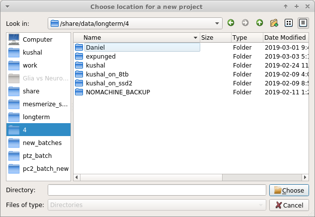

Viewer overview¶
Based on the pyqtgraph ImageView widget.
The Viewer allows you to do the following things:
- Examine your calcium movies
- Use modules to perform things like motion correction, CNMF(E), ROI labeling, and stimulus mapping. See their respective guides for details.
- You can also make modifications to an existing Sample in your project by opening it in the Viewer. See Modify Sample and Overwrite guide.
Layout¶
{kind=link}
To access Viewer modules choose the module you want to run from the Modules menu at the top. All modules, except the Batch Manager, are small floating windows which you can dock into the Viewer by dragging them to an edge of the viewer.
Work Environment¶
Everything in the viewer is stored in a Work Environment object. The main data attributes of the viewer work environment are outlined below.
See also
| Attribute | Description |
|---|---|
| imgdata | ImgData object containing the Image Sequence and meta data from the imaging source |
| roi_manager | The back-end ROI Manager that is currently in use |
| sample_id | SampleID, if opened from a project Sample |
| stim_maps | Stimulus maps, if any are defined |
| history_trace | History log, currently used for logging caiman motion correction, CNMF and CNMFE history. |
| UUID | If opened from a project Sample, it refers to the ImgUUID |
You can view everything in the current work environment by going to View -> Work Environment Editor. You cannot edit through this GUI at this time.
Menubar¶
File¶
Add to Project¶
Add the current work environment as a Sample to the project.
Open Work Environment¶
Deprecated
Save Work Environment¶
Deprecated
Clear Work Environment¶
Clear the current work environment. Useful for freeing up RAM.
Edit¶
Deprecated
Image¶
Reset Scale¶
Reset the scale of the image ViewBox
Resize¶
Resize the image sequence using interpolation.
Crop¶
Crop the image sequence.
Usage
- When you click this option a square crop region will appear in the top left corner of the image sequence.
- You can change its shape using the handle in the bottom right corner.
- To crop to the selection, in the menubar go to Image -> Crop. To cancel cropping right click in the crop region and click “Remove ROI”.
Measure¶
Measure the distance (in pixels) between two points in the image sequence.
Usage
- After clicking this option in the menubar, click on a point in the image sequence. You will not see anything yet.
- Click on a second point in the image sequence, a line will appear connecting the first and second points that you clicked.
- You can use the handles at the endpoints of the line to change the line.
- To measure the distance of the line go to Image -> Measure. A window will pop up displaying the change in x, y, and length of the line in pixels.
Change dtype¶
Not implemented yet. You can change the dtype through the console.
Projections¶
View Mean, Max, and Standard Deviation projections of the current image sequence in the work environment.
Modules¶
Default Viewer Modules. These are explained in more details in the Viewer Modules chapters.
Plugins¶
Custom viewer modules.
View¶
Work Envionment Editor¶
Explore the data in your work environment using a GUI.

Note
This is read only, you cannot edit via this GUI.
For example if you want to see your meta data, double click on “imgdata” and then you can see that “imgdata” has two things, the image sequence (i.e. your video) and the meta data.

If you double click on “meta” above you can see your meta data.

You can view your meta data more quickly using the console.
Open the console by going to View -> Console.
You can then call get_meta() to print the meta data dict.

Console¶
View/hide the viewer console
Console¶
You can interact directly with the work environment using the console.
See also
Namespace¶
| Reference | Description |
|---|---|
| vi | Instance of ViewerUtils. Use this to interact with the viewer. |
| all_modules | List all available modules (includes default and any available plugins/custom modules) |
| ViewerWorkEnv | Use for creating new instances of ViewerWorkEnv |
| ImgData | Use for creating new instances of ImgData |
| get_workEnv() | Get the current viewer work environment (instance of ViewerWorkEnv) |
| get_image() | Get the current image sequence (returns current ViewerWorkEnv.imgdata.seq) |
| get_meta() | Get the current meta data |
| get_module(<name>) | Pass the name of a module as a string. Returns that module if it is available. |
| get_batch_manager() | Get the batch manager. |
| update_workEnv() | Update the viewer GUI with the viewer work environment (vi.viewer.workEnv) |
| clear_workEnv() | Clear the current work envionment, cleanup the GUI and free the RAM |
Examples¶
View meta data¶
>>> get_meta()
{'origin': 'AwesomeImager', 'version': '4107ff58a0c3d4d5d3c15c3d6a69f8798a20e3de', 'fps': 10.0, 'date': '20190426_152034', 'vmin': 323, 'vmax': 1529, 'orig_meta': {'source': 'AwesomeImager', 'version': '4107ff58a0c3d4d5d3c15c3d6a69f8798a20e3de', 'level_min': 323, 'stims': {}, 'time': '152034', 'date': '20190426', 'framerate': 10.0, 'level_max': 1529}}
View history trace¶
>>> get_workEnv().history_trace
[{'caiman_motion_correction': {'max_shifts_x': 32, 'max_shifts_y': 32, 'iters_rigid': 1, 'name_rigid': 'Does not matter', 'max_dev': 20, 'strides': 196, 'overlaps': 98, 'upsample': 4, 'name_elas': 'a1_t2', 'output_bit_depth': 'Do not convert', 'bord_px': 5}}, {'cnmfe': {'Input': 'Current Work Environment', 'frate': 10.0, 'gSig': 10, 'bord_px': 5, 'min_corr': 0.9600000000000001, 'min_pnr': 10, 'min_SNR': 1, 'r_values_min': 0.7, 'decay_time': 2, 'rf': 80, 'stride': 40, 'gnb': 8, 'nb_patch': 8, 'k': 8, 'name_corr_pnr': 'a8_t1', 'name_cnmfe': 'a1_t2', 'do_corr_pnr': False, 'do_cnmfe': True}}, {'cnmfe': {'Input': 'Current Work Environment', 'frate': 10.0, 'gSig': 10, 'bord_px': 5, 'min_corr': 0.9600000000000001, 'min_pnr': 14, 'min_SNR': 1, 'r_values_min': 0.7, 'decay_time': 4, 'rf': 80, 'stride': 40, 'gnb': 8, 'nb_patch': 8, 'k': 8, 'name_corr_pnr': '', 'name_cnmfe': 'a1_t2', 'do_corr_pnr': False, 'do_cnmfe': True}}]
Open image¶
1 2 3 4 5 6 7 8 | # Get the tiff module
tio = get_module('tiff_io')
# Set the tiff and meta file paths
tiff_path = '/path_to_tiff_file.tiff'
meta_path = '/path_to_meta_file.json'
tio.load_tiff(tiff_path, meta_path, method='asarray')
|
See also
Tiff IO API, Information on the meta data format
Use the ViewerCore API to open any arbitrary image
1 2 3 4 5 6 7 8 9 10 11 12 13 14 15 16 17 18 19 20 | import tifffile
import json
# Open an image file in whatever way you require
seq = tifffile.imread('/path_to_tiff_file')
meta = ...
# Create ImgData instance
# Image sequence must be numpy array of shape [x, y, t]
imgdata = ImgData(seq.T, meta)
# Create a work environment instance
work_env = ViewerWorkEnv(imgdata)
# Set this new work environment instance as the viewer work environment
vi.viewer.workEnv = work_end
# Update the viewer GUI with the new work envionment
update_workEnv()
|
Splice img seq¶
Extract the image sequence between frame 1000 and 2000. Image sequences are simply numpy arrays.
See also
1 2 3 4 5 6 7 8 9 10 11 | # Get the current image sequence
seq = get_image()
# Trim the image sequence
trim = seq[:, :, 1000:2000]
# Set the viewer work environment image sequence to the trim one
vi.viewer.workEnv.imgdata.seq = trim
# Update the GUI with the new work environment
update_workEnv()
|
Running scripts¶
You can use the Script Editor to run scripts in the Viewer console for automating tasks such as batch creation. It basically allows you to use the viewer console more conveniently with a text editor.